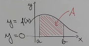
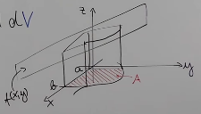
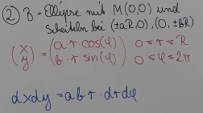

Table of Contents
1. What is it
a single function for org-mode files that allows embedded slideshows, animated diagrams…
2. Examples
| name | age | city | |
|---|---|---|---|
| 1 | max | 23 | london |
| name | age | city | |
|---|---|---|---|
| 1 | max | 23 | london |
| 2 | alice | 72 | paris |
| name | age | city | |
|---|---|---|---|
| 1 | max | 23 | london |
| 2 | alice | 72 | paris |
| 3 | bob | 34 | tokyo |
| name | age | city | |
|---|---|---|---|
| 1 | max | 23 | london |
| 2 | alice | 72 | paris |
| 3 | bob | 34 | tokyo |
| 4 | chris | 12 | berlin |
(3) 5 8 1 2 9 4 6 –—slide–— 5 (3) 8 1 2 9 4 6 –—slide–— 5 3 (8) 1 2 9 4 6 –—slide–— 5 3 1 (8) 2 9 4 6 –—slide–— 1 2 3 4 5 6 7 8
  
3. The function
(defun org-dblock-write:update-slide (params)
(let ((text (plist-get params :content))
(count (plist-get params :count)) ;; TODO check for nil, don't break when missing
(delimiter (plist-get params :delimiter))
(slides '(0))
new-count
pos-of-block-in-buf
end-of-block-in-buf)
(unless delimiter (setq delimiter "#+SLIDE"))
(setq new-count (1+ count))
(setq delimiter (regexp-quote delimiter)) ; escape special regex chars
(setq pos-of-block-in-buf (point))
(setq text (substring text 0 -1)) ; remove last newline from text
(save-excursion (insert text))
(setq last-match (string-match delimiter text))
(while (not (equal last-match nil)) ;; fill slides list with indices
(setq slides (append slides (list last-match))) ;; TODO there must be a better way...
(setq last-match (string-match delimiter text (+ (car (last slides)) (length delimiter)))))
(setq slides (append slides (list (length text))))
(setq end-of-block-in-buf (+ pos-of-block-in-buf (car (last slides))))
(when (>= new-count (length slides)) (setq new-count 0)) ; wraparound
(save-excursion ; return point to where it was after this call
(let ((curr-count (concat ":count " (number-to-string count)))
(next-count (concat ":count " (number-to-string new-count))))
(forward-line -1)
(replace-string-in-region curr-count next-count nil pos-of-block-in-buf)))
(outline-flag-region (- pos-of-block-in-buf 1) end-of-block-in-buf t)
(let ((hide-from (+ (+ pos-of-block-in-buf (nth (- new-count 1) slides)) (- (length delimiter) 1)))
(hide-to (+ pos-of-block-in-buf (nth new-count slides))))
(when (equal new-count 1) (setq hide-from 0)) ; special case
(if (equal new-count 0)
(outline-flag-region (- pos-of-block-in-buf 1) end-of-block-in-buf nil)
(outline-flag-region hide-from hide-to nil)
))
(org-latex-preview) ; preview latex in case they are part of the slide
(org-display-inline-images) ; show images in case they are part of the slide
))
4. Exporting
(defun org-slide-export (text backend info)
"Remove the slide delimiters from the html"
(when (org-export-derived-backend-p backend 'html)
;(print text)
; TODO pull the delimiter argument out the plist for the dynamic block - but
; when looking at parse-tree: (dynamic-block (... :block-name "update" :arguments nil ..))
(replace-regexp-in-string (regexp-quote "#+SLIDE") "" text)))
(add-to-list 'org-export-filter-dynamic-block-functions
'org-slide-export)
5. TODO
[X]find out how to narrow / hide lines from the buffer[X]find out where beginslide block starts and ends- …
[X]support for images inside the slides[ ]find out how to hook into the org exporter[ ]find out how to export HTML (clickable animation)[ ]find out how to export Latex[ ]implement without dirtying the buffer when ’C-c C-c’- Probably can’t be done when using org-mode dynamic blocks
6. The user API
(org-slide-add) ;; add a new, empty slide after this slide (org-slide-del) ;; remove the current slide (org-slide-next) ;; go to next slide, wraparound by default (org-slide-prev) ;; go to prev slide, wraparound by default